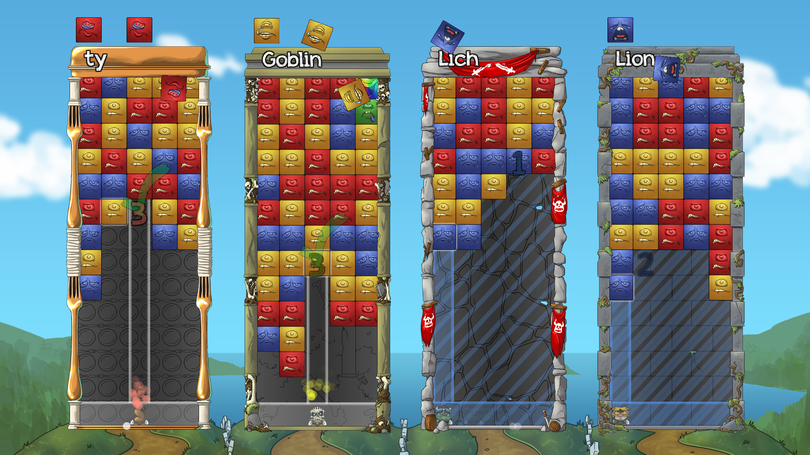
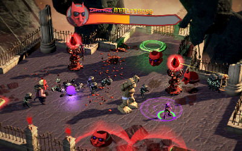
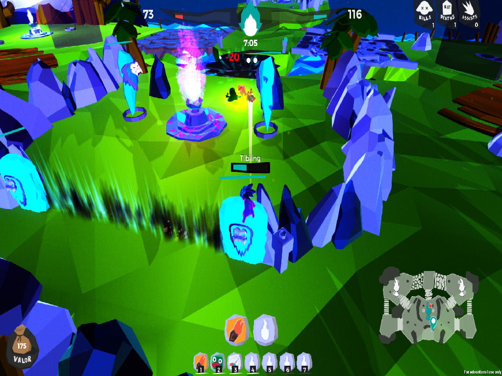

Christopher Tammik
Sound Designer
In Progress
Tumblestone
A multiplayer action puzzle game I worked on in collaboration with "A Shell In The Pit". I was tasked with creating sound design for which I undertook two field recording trips, gathering coustom sound effects in the woods. The game is releasing on Steam and Xbox One coming to other consoles later. Get "Tumblestone"
Untitled Project
An adventure game yet to be announced. Very secret;)
Shipped
Headventures In The Underworld
A coop-only game with an novel and innovative control scheme. Each player uses the two anelouge sticks on the controller to navigate his/her body (health) and head (attacks/puzzle solver) independently. I created sound design for the puzzle elements as well a swrote a interactive music score and implemented in Wwise middleware. Download "Headventures"
TiB
A extremely cute 3vs3 MoBa with two factions of spirit creatures batteling for control of the floating islands. I created sound design and a dynamic music score reflecting the progress of the match. Implementation was done in Wwise. Downlod "TiB"